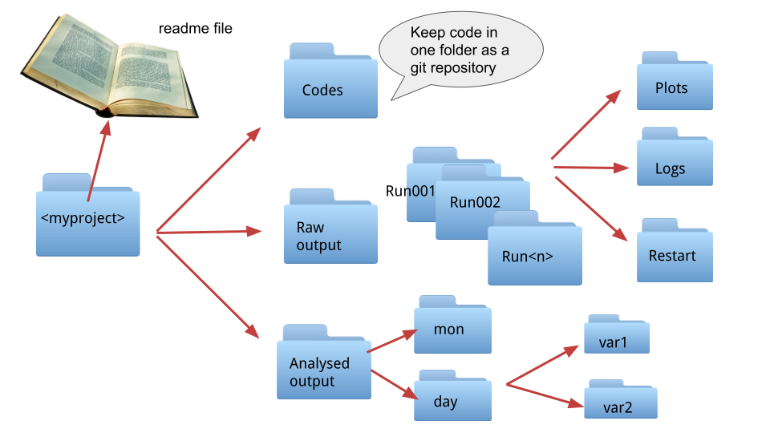

Choosing a directory structure (DRS) and filenames¶
The names you choose for files and directories and generally the way you organise your data, i.e. your directory structure (DRS) can help navigating the data and provide extra information, avoid confusion and the user ending up accessing the wrong data. As for many other cases the best file organisation will depend on the specific research project and the actual server where the data is stored. Here we are just listing a few guidelines and tips to help you decide.
General considerations¶
Familiarise yourself with the storage system, make sure you are storing the files in the most appropriate place, get to know if the storage is backed up or not, what is your allocation, and also what rules or best practices apply. Take into account how yourself or others might want to use the data, this is particularly important when deciding the DRS but also how to divide data across files for big dataset as model output. Doing so at the start of the project will spare you lots of time you might otherwise spend re-processing all your files. Be consistent, this applies both to the organisation and the naming, consistency is essential for the data to be machine-readable, i.e. data which is easy to access by coding. In fact, use community standards and/or controlled vocabularies wherever possible. Consider adding a readme file in the main directory (we always do that for data we publish), including an explanation of the DRS and the naming conventions, abbreviation and/or codes you used. If you used standards and controlled vocabularies all you have to do is to include a link to them.
Naming¶
You can use your filenames to include information here is some you can consider:
project, simulation and/or experiment acronyms, you might have to use a combination of them.
spatial coverage: the region or coordinates range covered by the data, could also be a specific domain for climate model data, i.e. ocean, land etc.
grid: could be either a grid label or spatial resolution
temporal coverage: a specific year/date or a temporal range
temporal frequency: monthly, daily etc
type of data: again this depends on context, if the same directory contains data from different instrumentations it is important to specify the instrument in the name. For coupled model output this could be the model component, if you are using one file per variable the variable name.
version: this is really important if you are sharing the data even if only 1 version exists at the time
correct file extension
DRS¶

The figure above shows an example of an organised working directory for a model output, things to consider:
try to organise files in directories based on type and how you process them for the final output think also about how other might use them: are they going to be used for analysis or they could be used as forcing or restart files for a model?
think of the way you would access these directories in a code, as an example having the variable directories using exactly the same name as the actual variable
make sure your code is separate from your data, you want to be able to use something like git to version control it and possibly GitHub to back it up easily
have at least one readme file with detailed metadata, possibly more if you have a lot of directories/files. You cannot use git for keep manage versions of data but you can use git to version control your readme files.
review at regular intervals what you are keeping, what needs to be removed and how things are organised
Tips for machine-readable files¶
avoid special characters: ~ ! @ # $ % ^ & * ( ) ` ; < > ? , [ ] { } ‘ “
do not use spaces to separate words use underscores “_” or dashes “-” or CamelCase
use YYYYMMDD for dates, it will sort your files in chronological order, absolutely avoid “Jan, Feb, ..” for months as they are much harder to code for.
or number sequence use leading zeros: so 001, 002, 020, 103 rather than 1, 2,.. 20, .. 103
try to avoid overly long names, for a single file, directory keep it under 255 characters, for paths 30000.
avoid having a large number of files in a single directory … but also an excessive number of directories with one file each
always include file extension, some software can recognise files from their header, but this is not always the case
Online Resources¶
We partially based this page on the resources listed below, we recommend to check them for more insight and advice.
Best practice to organise your data - part of an Open reproducible science course from the University of Colorado
Best file naming practice handout (pdf) from Standford University